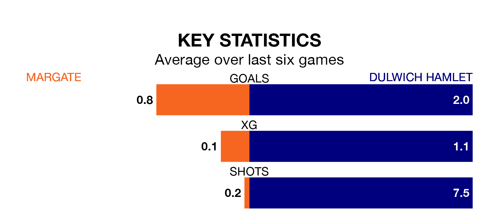

Dulwich Hamlet are strong favourites to take all three points despite Margate's home advantage in Saturday's match at Hartsdown Park.
*Betting Company* are offering odds of 1.73 on Dulwich Hamlet sealing the win, with the visitors sitting 10th in Isthmian Premier Division table.
Margate, who are 19th in the league and 17 points behind Dulwich Hamlet, are priced at 3.65 to win. A draw is set at 4.2.
Margate are in terrible form in Isthmian Premier Division, with no wins and a draw from their last six games.
With three wins and two draws over that period, Dulwich Hamlet's form is much better – they have taken 11 points from 18, compared to the hosts' one.
With 28 goals in 27 games so far this season, Margate are scoring at below the league average rate with 1.0 goals per game. And they are conceding more than average, letting in 49 goals at a rate of 1.8 per game.
The away team, meanwhile, are above average scorers, with 1.9 goals per game, compared to a league average of 1.6. They have conceded 1.6 goals per game.
In the last 10 years, Margate and Dulwich Hamlet have played each other on seven occasions. Margate won two of them, Dulwich Hamlet three, and they drew twice.
On average, Margate scored 1.3 goals and Dulwich Hamlet 1.4 in those matches.
Their last meeting was on November 11, when they played out a 2-2 draw.
Margate's last match was on Tuesday, a 4-0 loss against Hastings United.
Dulwich Hamlet beat Wingate and Finchley 3-0 last time out, also on Tuesday.
Updated: 14:12 (UTC), 02/02/24